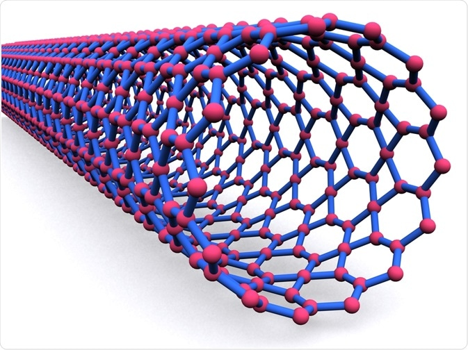

Carbon nanotubes
-
Batteries and Capacitors
Batteries and capacitors are the most important energy storage devices we use and carbon nanotubes can help us here as well.CNTs have intrinsic properties which can be the materials for the use as electrodes in capacitors and batteries. The properties of CNTs which will be useful are good electrical conductivity , high surface area , and most importantly its linear geometry which makes their surface very accessible for the electrolyte.Research has demonstrated that CNTs have the highest reversible capacity of any carbon material for use in lithium-ion batteries. Moreover, CNTs are excellent materials for supercapacitor electrodes.CNTs can also be used for fuel cell components. The properties like high thermal conductivity and surface area will be helpful in PEM fuel cells. Because of its high electrical conductivity, it can be used in gas diffusion layers.As CNTs are hard and has high strength so it can be used as a part of composite components in fuel cells which are used in transport applications.
-
Conductive pastics
Plastics have been used extensively for the past few decades and plastics have evolved as the substitute for metals.But plastics lack electrical conductivity. Plastics are very good electrical insulators.But we can make plastics by loading plastics up with conductive fillers, such as carbon black and larger graphite fiber.In order to offer the necessary conductivity using conventional fillers, the loading required is typically high, but leading to heavy parts can degrade the structural properties of plastic. As the aspect ratio of filler particles becomes high, the loading required to achieve a given level of conductivity becomes low. CNTs can be used here as it has the highest aspect ratio of any carbon fiber. It also has a natural tendency to form ropes which provides inherently very long conductive pathways even at ultra-low loadings.This behavior of CNTs is utilized in applications such as electrostatic dissipation (ESD), EMI/RFI shielding composites.

Graphene
-
Stretchable Electronics Applications
Advances in both computational and analytical models have recently begun to enable the fabrication of nanoscale semiconductor materials that will tolerate relatively large amounts of strain advances in the manufacturing of Gr may allow similar structures to be produced (Wang et al., 2017). Although measurements of second-order stiffness in graphene have yielded in-plane stiffness values of ~340 N/m (Lee et al., 2008), crumpling from static wrinkling in free-standing Gr at biologically relevant temperatures effectively reduces this value (Nicholl et al., 2015). p-type doping of Gr may be one way forward for flexible Gr electrodes, as it decreases sheet resistance and increases the effective work function (Han et al., 2016). Multilayer-based approaches using Gr may also improve stretchability performance through strain relaxation (Won et al., 2014). In fact, the addition of Gr “nanoscrolls” between layers in transparent transistors showed improved performance under strain relative to monolayer Gr (Liu N. et al., 2017); and multilayer composite or flexible devices must be designed with consideration to the properties of Gr/GO that are being utilized. For example, PEDOT electrodes with sufficient recording capability where Gr may be incorporated to increase overall mechanical strength may have different design criteria from applications where Gr acts as an electrode material.
-
Payload delivery
The delivery of various forms of genetic payload has been demonstrated as a possible application for Gr/GO-based materials, however, to date, low transduction efficiencies limit the utility of Gr in comparison to traditional methods for genetic delivery. For example, chitosan-stabilized GO sheets had a lower transfection efficiency for luciferase transduction into HeLa cells compared to traditional methods. Polymer-based assemblies are some of the most widely used nanomaterial strategies for transduction, and relative to polymer-based approaches, GO used to attach plasmid DNA and PEI shows improved transfection efficiency (Feng et al., 2011). Gr can also bind ssDNA, although cannot bind dsDNA to the same extent. This property has been exploited to deliver hairpin-shaped DNA into cells, which will be unloaded upon interaction with an mRNA target (Lu et al., 2010). GO has also been employed as a delivery vehicle for aptamers, delivering an ATP-binding aptamer (Wang et al., 2010) to cells. Gr/GO may ultimately be most advantageous for applications where simultaneous delivery of both genetic payloads and pharmacological compounds is desirable. For example, PAMAM functionalized GO was demonstrated as a vehicle for both DOX and shRNA (Gu et al., 2017) delivery.